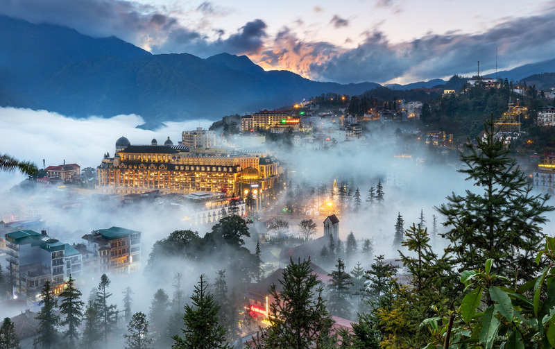
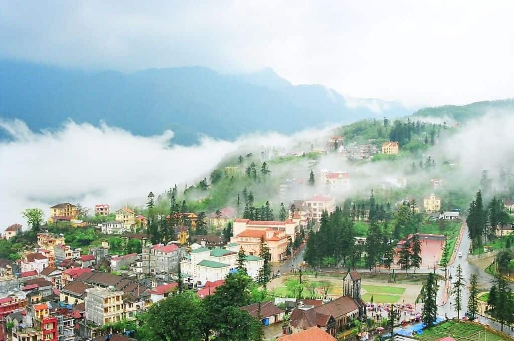

- TRANG CHỦ
- THỜI ĐIỂM NÊN ĐI
- PHƯƠNG TIỆN ĐI LẠI
- CHI PHÍ
>
Giới Thiệu Du Lịch SAPA
Sa Pa là một huyện vùng cao của tỉnh Lào Cai, nằm ở phía Tây Bắc của Việt Nam, thị trấn Sa Pa ở độ cao 1.600 mét so với
mực nước biển, cách thành phố Lào Cai 38 km và 376 km tính từ Hà Nội. Ngoài con đường chính từ thành phố Lào Cai, để
tới SaPa còn một tuyến giao thông khác, quốc lộ 4D nối từ xã Bình Lư, Lai Châu.
.jpg)
Sapa với diện tích khoảng 678,6 km2 là nơi sinh sống chủ yếu của các dân tộc Mông, Dao, Tày, giáy, Xá Phó, Kinh, Hoa.
Sapa - một vùng đất khiêm nhường, lặng lẽ nhưng ẩn chứa bao điều kỳ diệu của cảnh sắc thiên nhiên. Phong cảnh thiên
nhiên của Sa Pa được kết hợp với sức sáng tạo của con người cùng với địa hình của núi đồi, màu xanh của rừng, như
bức tranh có sự sắp xếp theo một bố cục hài hoà tạo nên một vùng có nhiều cảnh sắc thơ mộng hấp dẫn.Nổi tiếng với
khí hậu mát mẻ quanh năm và vùng núi đồi phong phú, Sa Pa là điểm đến lý tưởng cho những ai muốn trải nghiệm không
khí trong lành của núi rừng và khám phá văn hóa dân tộc thiểu số địa phương, chủ yếu là người H'mông, Dao, Tày và
các dân tộc khác

Chìm trong làn mây bồng bềnh thị trấn Sa Pa như một thành phố trong sương huyền ảo, làm cho du khách cữ ngỡ như mình
đang lạc trong chốn thần tiên. Nơi đây, có thứ tài nguyên vô giá đó là khí hậu trong lành mát mẻ, mang nhiều sắc thái
đa dạng.Nằm ở độ cao trung bình 1500m – 1800m, nên khí hậu Sa Pa ít nhiều lại mang sắc thái của xứ ôn đới, với nhiệt
độ trung bình 15-18°C. Từ tháng 5 đến tháng 8 có mưa nhiều. Thời tiết ở thị trấn một ngày có đủ bốn mùa: buổi sáng
là tiết trời mùa xuân, buổi trưa tiết trời như vào hạ, thường có nắng nhẹ, khí hậu dịu mát, buổi chiều mây và sương
rơi xuống tạo cảm giác lành lạnh như trời thu và ban đêm là cái rét của mùa đông. Nhiệt độ không khí trung bình năm
của SaPa là 15ºC. Mùa hè, thị trấn không phải chịu cái nắng gay gắt như vùng đồng bằng ven biển, khoảng 13ºC – 15°C
vào ban đêm và 20ºC – 25°C vào ban ngày. Mùa đông thường có mây mù bao phủ và lạnh, nhiệt độ có khi xuống dưới 0°C,
đôi khi có tuyết rơi. Lượng mưa trung bình hàng năm ở đây khoảng từ 1.800 đến 2.200 mm, tập trung nhiều nhất vào
khoảng thời gian từ tháng 5 tới tháng 8. Thị trấn SaPa là một trong những nơi hiếm hoi của ViệtNam có tuyết. Vào
thập niên 1940, người Pháp đã quy hoạch, xây dựngSaPa thành nơi nghỉ mát, điều dưỡng khá lý tưởng

Sỡ dĩ có tên gọi Sa Pa là nguồn gốc từ tiếng Quan Thoại. Trong tiếng Quan Thoại phát âm là SaPả hay SaPá tức “bãi cát”
do ngày trước khi có thị trấn Sa Pa thì nơi đây chỉ có một bãi cát mà dân cư bản địa thường họp chợ. Ngoài ra, Sa
cũng có thể là cách nói lệch đi theo phiên âm tiếng Tàu là Sha cũng có nghĩa là Cát. Từ hai chữ “Sa Pả”, người phương
Tây phát âm không dấu, thành SaPa và họ đã viết bằng chữ Pháp hai chữ đó thành “Cha Pa” và một thời gian rất dài sau
đó người ta dùng “Cha Pa” như một từ tiếng Việt. Về sau, từ này viết được thống nhất là SaPa. Thị trấn SaPa trước đây
có một mạch nước đùn lên màu đỏ đục, nên dân địa phương gọi là “hùng hồ”, tức “suối đỏ”.Trước kia, SaPa là một cao nguyên
nhỏ mang tên Lồ Suối Tủng. Năm 1897 chính quyền thuộc địa Pháp quyết định mở một cuộc điều tra về người dân tộc thiểu số
miền núi vùng cao. Những đoàn điều tra đầu tiên đến Lào Cai vào năm 1898 Mùa đông năm 1903, trong khi tiến hành đo đạc
xây dựng bản đồ, đoàn thám hiểm của Sở địa lý Đông Dương đã khám phá ra cảnh quan cao nguyên Lồ Suối Tủng và làng SaPả.
Sự kiện này đánh dấu việc ra đời của thị trấn SaPa.
SaPa bị tàn phá nhiều trong Chiến tranh biên giới Việt – Trung 1979. Hàng ngàn ha rừng thông bao phủ thị trấn bị đốt
sạch, nhiều toà biệt thự cổ do Pháp xây cũng bị phá huỷ. Vào thập niên 1990, SaPa được xây dựng, tái thiết trở lại.
Nhiều khánh sạn, biệt thự mới được xây dựng. Từ 40 phòng nghỉ vào năm 1990, lên tới 300 vào năm 1995. Năm 2003,
SaPa có khoảng 60 khách sạn lớn nhỏ với 1.500 phòng. Lượng khách du lịch tới SaPa tăng lên từ 2.000 khách vào năm
1991 đến 60.000 khách vào 2002. Và cho đến nay, việc đến Sapa tham quan và khám phá ngày càng gần gũi hơn với các
du khách trong và ngoài nước với các tour Sapa giá rẻ rất dễ tìm kiếm. Hoặc với những bài chia sẻ của rất nhiều
bạn trẻ về kinh nghiệm du lịch tự túc Sapa, bạn hoàn toàn có thể lên lịch cho chuyến khám phá riêng của mình.Về phía
tây thị trấn SaPa là dãy núi Hoàng Liên Sơn, bốn mùa vào buổi sáng sớm sương giăng mờ mịt. Nơi đây có đỉnh Phan Xi
Păng cao 3.143mét rất thích hợp cho ngững người thích môn leo núi và là khu vực của nhiều loại động, thực vật quý
hiếm như cây hoàng liên, thông dầu v.v. Có 37 loài được ghi trong Sách đỏ Việt Nam. Sa Pa, một địa danh nguyên sơ
với làng bản các dân tộc ít người như H’Mông, Dao, Tày, Xá Phó… với Thác Bạc, cổng Trời, cầu Mây, hang Gió, núi
Hàm Rồng… xứng đáng là một nơi dành cho những ai yêu thiên nhiên, muốn tìm hiểu phong tục tập quán của người dân
miền núi. SaPangày nay còn có thêm điểm tham quan hấp dẫn nữa là bải đá cổ ở thung lũng Mường Hoa. Nơi đây được
coi là di tích nền văn minh Việt cổ – điểm du lịch nghiên cứu khoa học rất lý thú